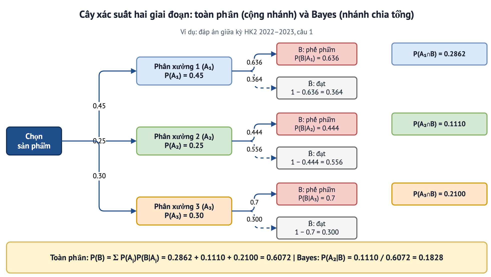

PHẦN 1/8
01
Nền tảng
- Vì sao cần toàn phần và Bayes
- Hệ đầy đủ
MODULE 4 · Bài học 1 · Chương 1, mục 1.6 (Lecture Notes)
Xác suất toàn phần và công thức Bayes
Nhiều bài toán cho ta xác suất theo từng nguồn (mỗi phân xưởng, mỗi loại bệnh, mỗi loại tín hiệu) và hỏi xác suất chung (toàn phần) hoặc xác suất ngược (Bayes): biết kết quả B, nguồn nào nhiều khả năng nhất?
- Hệ đầy đủ các biến cố {A₁, …, Aₙ}
- Công thức xác suất toàn phần P(B) = ΣP(B|Aᵢ)P(Aᵢ)
- Công thức Bayes (hậu kiểm) P(Aᵢ|B)
- Cây xác suất hai giai đoạn
📖 Giải thích cho người mới bắt đầu
Toàn phần = đi từ nguyên nhân đến kết quả (cộng các nhánh). Bayes = đi ngược từ kết quả về nguyên nhân (chia nhánh liên quan cho tổng).
PHẦN 1 · Nền tảng
Hệ đầy đủ các sự kiện (Định nghĩa 1.6)
- \(\{A,A^c\}\)luôn là hệ đầy đủ với mọi biến cố A
Ví dụ: “sản phẩm do phân xưởng 1, 2 hoặc 3 sản xuất” — mỗi sản phẩm thuộc đúng một phân xưởng; hay “bộ phận I/II chạy hay hỏng” (4 khả năng, ví dụ 1.21).
PHẦN 2/8
02
Phương pháp
- Toàn phần
- Bayes
- Cây xác suất
- Máy tính tương tác
PHẦN 2 · Phương pháp
Xác suất toàn phần
- \(P(A_i)\)xác suất tiên nghiệm (prior)
- \(P(B\mid A_i)\)xác suất có điều kiện (likelihood)
Ví dụ 1.20: ba nhà máy 35%, 45%, 20% với tỉ lệ phế phẩm 1%, 0.5%, 0.2% ⇒ P(B) = 0.0035 + 0.00225 + 0.0004 = 0.00615.
📖 Giải thích cho người mới bắt đầu
Một phế phẩm có thể đến từ nhà máy nào cũng được; ta cộng “xác suất đến từ nhà máy i và là phế phẩm” cho cả ba nhà máy.
PHẦN 2 · Phương pháp
Công thức Bayes
- \(P(A_i\mid B)\)xác suất hậu nghiệm sau khi quan sát B
Kiểm tra nhanhCác hậu nghiệm P(Aᵢ | B) luôn có tổng bằng 1. Mẫu số chính là P(B) vừa tính bằng công thức toàn phần.
📖 Giải thích cho người mới bắt đầu
Bayes cập nhật niềm tin: trước khi biết, xác suất “do nhà máy II” là 45%; sau khi biết sản phẩm là phế phẩm, xác suất đó được tính lại theo tỉ lệ phế phẩm của từng nhà máy (nhà máy II: 0.00225/0.00615 = 36.6%).
PHẦN 2 · Phương pháp
Cây xác suất hai giai đoạn

Cây xác suất cho đáp án giữa kỳ HK2 2022–2023 câu 1: nhân dọc theo nhánh, cộng các nhánh B, chia để ra hậu nghiệm.
PHẦN 2 · Phương pháp
Thực hành: máy tính toàn phần và Bayes
PHẦN 3/8
03
Ví dụ có lời giải (câu hỏi thật)
- Pít-tông
- Mạch ngừng
- Đề giữa kỳ
PHẦN 3 · Ví dụ
Ví dụ 1: ba phân xưởng pít-tông
Bài 1.23 (Lecture Notes)Pít-tông: phân xưởng I, II, III sản xuất 40%, 35%, 25% với phế phẩm 5%, 8%, 4%.
- \(P(B)=0.4\cdot0.05+0.35\cdot0.08+0.25\cdot0.04=0.058\)
- \(P(A_2\mid B)=\dfrac{0.35\cdot0.08}{0.058}=0.4828\)
Các hậu nghiệm: I = 0.3448, II = 0.4828, III = 0.1724 (tổng 1).
PHẦN 3 · Ví dụ
Ví dụ 2: nguyên nhân mạch ngừng
Ví dụ 1.21 (Lecture Notes)Hai bộ phận nối tiếp chạy với xác suất 0.95 và 0.98; thấy mạch ngừng.
| Biến cố | Xác suất | Mạch ngừng? | Hậu nghiệm |
|---|
| A₁ cả hai chạy | 0.931 | 0 | 0 |
| A₂ chỉ II hỏng | 0.019 | 1 | 19/69 = 0.2754 |
| A₃ chỉ I hỏng | 0.049 | 1 | 49/69 = 0.7101 |
| A₄ cả hai hỏng | 0.001 | 1 | 1/69 = 0.0145 |
PHẦN 3 · Ví dụ
Ví dụ 3: câu Bayes của đề giữa kỳ
Đáp án giữa kỳ HK2 2022–2023, câu 1P(A) = 0.45, 0.25, 0.3; P(B | A) = 0.636, 0.444, 0.7.
- Hệ đầy đủ ⇒ P(B) = 0.2862 + 0.1110 + 0.2100 = 0.6072 ≈ 0.607.
- Bayes: P(A₂ | B) = 0.1110/0.6072 = 0.1828 ≈ 0.183.
PHẦN 4/8
04
Chuyên sâu: xác suất toàn phần
MODULE 4 · PHẦN 4 · Chuyên sâu
Công thức toàn phần từng bước
Ví dụ A1 · Ba dây chuyềnBa dây chuyền sản xuất 50%, 30%, 20% sản lượng; tỉ lệ phế phẩm 2%, 3%, 5%. Chọn ngẫu nhiên một sản phẩm. P(phế phẩm)?
| Dây chuyền | P(Aᵢ) | P(B | Aᵢ) | Tích |
|---|
| 1 | 0.50 | 0.02 | 0.010 |
| 2 | 0.30 | 0.03 | 0.009 |
| 3 | 0.20 | 0.05 | 0.010 |
| Tổng | 1 | | 0.029 |
- \(P(B)=\sum_iP(A_i)P(B|A_i)=0.5\cdot0.02+0.3\cdot0.03+0.2\cdot0.05\)
- \(=0.010+0.009+0.010=0.029\)
Nhìn như trung bình có trọng số của các tỉ lệ phế phẩm.
📖 Giải thích cho người mới bắt đầu
Chia “thế giới” thành các trường hợp không chồng lấn, tính xác suất của B trong từng trường hợp rồi cộng theo tỉ trọng.
MODULE 4 · PHẦN 4 · Chuyên sâu
Chọn hộp rồi rút bi
Ví dụ A2 · Hai hộpHộp I: 3 bi trắng, 2 đen. Hộp II: 2 trắng, 4 đen. Chọn một hộp ngẫu nhiên, rút một bi. P(trắng)?
- \(P(T)=\tfrac12\cdot\tfrac35+\tfrac12\cdot\tfrac26=0.3+0.1667=0.4667\)
Nếu chọn hộp theo xác suất 0.7 và 0.3 thì P(T) = 0.7·0.6 + 0.3·0.3333 = 0.52: đáp số thay đổi theo xác suất chọn hộp.
PHẦN 5/8
05
Chuyên sâu: công thức Bayes
- Hậu nghiệm từng bước
- Xét nghiệm sàng lọc
- Tần suất tự nhiên
- Xét nghiệm lặp lại
- Kênh nhiễu
MODULE 4 · PHẦN 5 · Chuyên sâu
Bayes: cập nhật niềm tin sau khi quan sát
Ví dụ B1 · Sản phẩm phế phẩm đến từ đâu?Tiếp Ví dụ A1: sản phẩm chọn ra là phế phẩm. Xác suất nó do từng dây chuyền?
| Dây chuyền | Tiên nghiệm P(Aᵢ) | P(Aᵢ)P(B|Aᵢ) | Hậu nghiệm P(Aᵢ|B) |
|---|
| 1 | 0.50 | 0.010 | 0.3448 |
| 2 | 0.30 | 0.009 | 0.3103 |
| 3 | 0.20 | 0.010 | 0.3448 |
- \(P(A_1|B)=\tfrac{0.010}{0.029}=0.3448\)
- \(P(A_2|B)=\tfrac{0.009}{0.029}=0.3103\)
- \(P(A_3|B)=\tfrac{0.010}{0.029}=0.3448\)
Dây chuyền 3 chỉ sản xuất 20% nhưng chịu trách nhiệm 34.5% phế phẩm vì tỉ lệ lỗi cao nhất. Tổng hậu nghiệm = 1.
📖 Giải thích cho người mới bắt đầu
Bayes đảo chiều điều kiện: từ “biết nguyên nhân, xác suất kết quả” sang “thấy kết quả, xác suất nguyên nhân”.
MODULE 4 · PHẦN 5 · Chuyên sâu
Giá trị tiên đoán dương
Ví dụ B2 · Xét nghiệm sàng lọcBệnh có tỉ lệ mắc 1%. Xét nghiệm có độ nhạy 95% (P(+|bệnh)) và độ đặc hiệu 90% (P(−|khỏe)). Người có kết quả dương tính thực sự bệnh với xác suất bao nhiêu?
- \(P(+)=0.95\cdot0.01+0.10\cdot0.99=0.0095+0.099=0.1085\)
- \(P(\text{bệnh}|+)=\tfrac{0.0095}{0.1085}=0.0876\)
- \(P(\text{khỏe}|-)=\tfrac{0.891}{0.8915}=0.9994\)
Nghịch lýDù xét nghiệm “chính xác 90–95%”, dương tính chỉ có 8.8% khả năng bệnh thật vì bệnh hiếm (tiên nghiệm 1%).
MODULE 4 · PHẦN 5 · Chuyên sâu
Cùng bài toán bằng bảng đếm
Ví dụ B3 · Tần suất tự nhiên (10 000 người)Cùng số liệu Ví dụ B2, đếm người thay vì xác suất.
| Bệnh (100) | Khỏe (9 900) | Tổng |
|---|
| Dương tính | 95 | 990 | 1 085 |
| Âm tính | 5 | 8 910 | 8 915 |
Trong 1 085 người dương tính, chỉ 95 người thật sự bệnh: 95/1085 = 8.76%. Cách đếm này giúp hiểu trực giác, kết quả trùng công thức Bayes.
MODULE 4 · PHẦN 5 · Chuyên sâu
Cập nhật liên tiếp
Ví dụ B4 · Xét nghiệm lặp lạiNgười dương tính lần một làm lại xét nghiệm độc lập, lại dương tính. Xác suất bệnh?
- \(\text{Tiên nghiệm mới}=P(\text{bệnh}|+)=0.0876\)
- \(P(\text{bệnh}|++)=\tfrac{0.95\cdot0.0876}{0.95\cdot0.0876+0.10\cdot0.9124}=0.4769\)
Hậu nghiệm của lần trước thành tiên nghiệm của lần sau: hai dương tính đưa xác suất lên ~48%.
MODULE 4 · PHẦN 5 · Chuyên sâu
Bayes trong truyền thông
Ví dụ B5 · Kênh truyền nhiễuNguồn gửi bit 1 với xác suất 0.6, bit 0 với 0.4. Kênh lật bit với xác suất 0.1. Nhận được bit 1. Xác suất đã gửi 1?
- \(P(\text{nhận }1)=0.6\cdot0.9+0.4\cdot0.1=0.58\)
- \(P(\text{gửi }1|\text{nhận }1)=\tfrac{0.54}{0.58}=0.9310\)
PHẦN 6/8
06
Chuyên sâu: quy trình và cây
- Năm bước
- Cây hai giai đoạn
MODULE 4 · PHẦN 6 · Chuyên sâu
Quy trình năm bước
- Bước 1: gọi tên các nguyên nhân A₁, …, Aₙ (hệ đầy đủ: xung khắc, tổng xác suất 1) và kết quả B.
- Bước 2: lập bảng P(Aᵢ) và P(B|Aᵢ).
- Bước 3: toàn phần P(B) = ΣP(Aᵢ)P(B|Aᵢ).
- Bước 4: Bayes P(Aᵢ|B) = P(Aᵢ)P(B|Aᵢ)/P(B).
- Bước 5: kiểm tra Σ P(Aᵢ|B) = 1.
Dấu hiệu nhận biếtĐề hỏi “biết kết quả B, xác suất do nguyên nhân Aᵢ” ⇒ Bayes. Đề hỏi “xác suất kết quả B chung” ⇒ toàn phần.
MODULE 4 · PHẦN 6 · Chuyên sâu
Cây xác suất
Ví dụ C1 · Cây xác suất hai giai đoạnGiai đoạn 1: máy A (60%) hoặc B (40%). Giai đoạn 2: sản phẩm đạt (A: 97%, B: 92%).
| Đường đi | Xác suất |
|---|
| A → đạt | 0.6·0.97 = 0.582 |
| A → lỗi | 0.6·0.03 = 0.018 |
| B → đạt | 0.4·0.92 = 0.368 |
| B → lỗi | 0.4·0.08 = 0.032 |
Nhân dọc theo nhánh, cộng các nhánh cùng kết quả: P(đạt) = 0.950; P(A | lỗi) = 0.018/0.05 = 0.36.
PHẦN 7 · Bẫy và mở rộng
Năm bẫy thường gặp
- Quên kiểm tra hệ đầy đủ: ΣP(Aᵢ) phải bằng 1.
- Nhầm P(B|A) với P(A|B): xét nghiệm “nhạy 95%” không có nghĩa dương tính ⇒ 95% có bệnh.
- Bỏ qua tỉ lệ nền: bệnh hiếm thì phần lớn dương tính là dương tính giả.
- Mẫu số của Bayes phải là P(B) đầy đủ, không phải chỉ một số hạng.
- Làm tròn quá sớm: giữ ≥ 4 chữ số trong các bước trung gian (đề yêu cầu ≥ 3 chữ số).
PHẦN 7 · Bẫy và mở rộng
Mở rộng: tần suất tự nhiên (10 000 người)
PHẦN 8/8
08
Ứng dụng và tổng kết
- Xét nghiệm sàng lọc
- Tổng kết
PHẦN 8 · Ứng dụng và tổng kết
Case study: xét nghiệm sàng lọc
Xét nghiệm bệnh hiếm. Bệnh mắc 1%, độ nhạy 95%, độ đặc hiệu 90%. Trong 10 000 người có 100 người bệnh (95 dương tính) và 9 900 người khỏe (990 dương tính giả). Trong 1 085 người dương tính chỉ có 95 người thật sự bệnh: P(bệnh | +) = 8.8%. Đây là lý do y tế dùng xét nghiệm thứ hai khi sàng lọc bệnh hiếm; cùng cấu trúc với bộ lọc thư rác và nhận dạng tín hiệu.
PHẦN 8 · Ứng dụng và tổng kết
Tổng kết module
- Kiểm tra hệ đầy đủ rồi dùng toàn phần.
- Bayes = (tích nhánh cần)/(tổng các tích).
- Vẽ cây xác suất để không sót nhánh.
- Kiểm tra: hậu nghiệm cộng lại bằng 1.
Tiếp theoModule 5: biến ngẫu nhiên, hàm phân phối, kỳ vọng và phương sai.